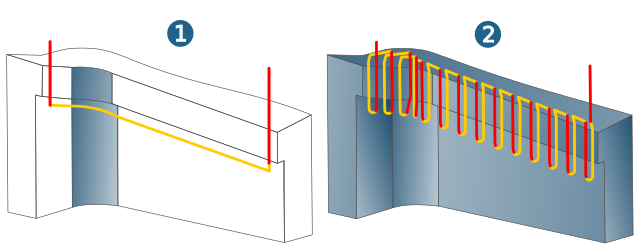
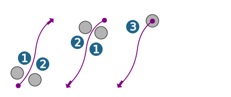

Strategy
Machining mode
Select swarf (1) or plunge (2) machining.
|  |
Tool position
On contour (1): The cutter moves directly on the contour.
Left (2), Right (3): The cutter moves beside the contour. The center point path of the cutter is output.
Auto: The contour direction is set automatically, depending on the model geometry to be milled. There is no need to reverse the contour manually. Prerequisite: The Check model option must be enabled on the Setup tab.
|  |
Cutting mode
Oneway: Machining always in the same orientation.
Zigzag: Machining with alternating orientation.
Interior corners
Fillet interior corners: Smooth filleting (rounding) of internal milling paths for pockets or islands.
Reduce corner feedrate: The interior corners are machined at a lower feedrate to protect the tool. The reduced feedrate is defined in the tool database as a technology parameter. This can also be adjusted for a specific material in a cutting profile.
Smooth overlap
Use smooth overlap: Enable if the tool is to perform a smooth overlap. Define the Area length (2) of the overlap. Use Distance (3) to define the maximum lateral distance of the tool from the model during the overlap.
 |